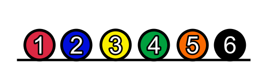

Sobre o jogo
Uma orda de inimigos estão atacando o seu prédio, o seu objetivo é proteger o mesmo, quanto mais
inimigos sobem a escada, menor o seu prédio fica, então não deixe eles subirem! Desempilhe o mais rápido possível!
Building Defense™ é um jogo de cliques, então a primeira coisa que você precisa ter para conseguir uma pontução alta é: DETERMINAÇÃO.
Como Jogar
Para matar os inimigos, basta clicar em cima deles, para assim remover o primeiro inimigo que subiu
a escada, clique o mais rápido possível,e desempilhe os inimigos.

Inimigos
Cada inimigo possui uma quantidade de força, então quanto mais forte, mais cliques serão necessários para matá-lo e remove-lo da escada.
Abaixo você vê a quantidade de cliques necessários para matar cada inimigo.
